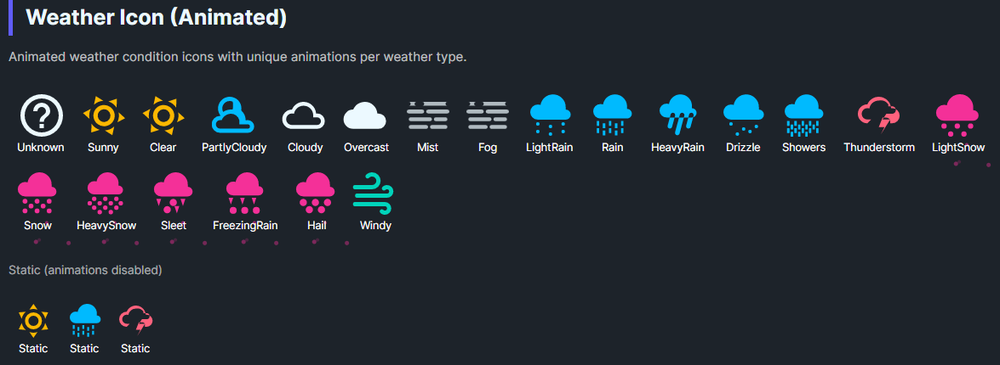

Animated weather condition icon with unique animations per weather type. Supports 21 weather conditions with condition-appropriate animations that can be toggled on/off.
DaisyWeatherIcon displays weather condition icons with optional animations. Each condition type has a tailored animation:
| Condition Type | Animation |
|---|---|
| ☀️ Sunny/Clear | Slow rotation (20s cycle) |
| ☁️ Cloudy/PartlyCloudy/Overcast | Gentle horizontal drift |
| 🌧️ Rain/Drizzle/Showers/LightRain/HeavyRain | Vertical bob with opacity pulse |
| ❄️ Snow/LightSnow/HeavySnow/Sleet/FreezingRain/Hail | Floating side-to-side motion |
| ⛈️ Thunderstorm | Lightning flash effect with overlay |
| 💨 Windy | Wave-like horizontal motion with skew |
| 🌫️ Fog/Mist | Subtle opacity fade in/out |
| ❓ Unknown | No animation |
| Property | Type | Default | Description |
|---|---|---|---|
Condition |
WeatherCondition |
Unknown |
The weather condition to display |
IconSize |
double |
64 |
Size of the icon in pixels |
IsAnimated |
bool |
true |
Whether to animate the icon |
The following conditions are supported:
Unknown, Sunny, Clear, PartlyCloudy, Cloudy, Overcast, Mist, Fog, LightRain, Rain, HeavyRain, Drizzle, Showers, Thunderstorm, LightSnow, Snow, HeavySnow, Sleet, FreezingRain, Hail, Windy
<!-- Basic sunny icon -->
<controls:DaisyWeatherIcon Condition="Sunny" />
<!-- Different conditions -->
<controls:DaisyWeatherIcon Condition="Rain" IconSize="48" />
<controls:DaisyWeatherIcon Condition="Thunderstorm" IconSize="64" />
<controls:DaisyWeatherIcon Condition="Snow" IconSize="40" />
<!-- With custom colors -->
<controls:DaisyWeatherIcon Condition="Sunny" Foreground="{ThemeResource DaisyWarningBrush}" />
<controls:DaisyWeatherIcon Condition="Rain" Foreground="{ThemeResource DaisyInfoBrush}" />
<!-- Static (no animation) -->
<controls:DaisyWeatherIcon Condition="Cloudy" IsAnimated="False" />
<!-- Large hero icon -->
<controls:DaisyWeatherIcon Condition="PartlyCloudy" IconSize="128" />| Condition | Suggested Brush |
|---|---|
| Sunny, Clear | DaisyWarningBrush (yellow/orange) |
| PartlyCloudy | DaisyInfoBrush |
| Cloudy, Overcast, Fog, Mist | DaisyBaseContentBrush |
| Rain, Drizzle, Showers, LightRain, HeavyRain | DaisyInfoBrush (blue) |
| Thunderstorm | DaisyErrorBrush (red) |
| Snow, LightSnow, HeavySnow, Sleet, FreezingRain, Hail | DaisySecondaryBrush |
| Windy | DaisyAccentBrush |
All animations use the WinUI Composition API with smooth easing. Animations are designed to be subtle and non-distracting while still conveying the weather condition effectively.